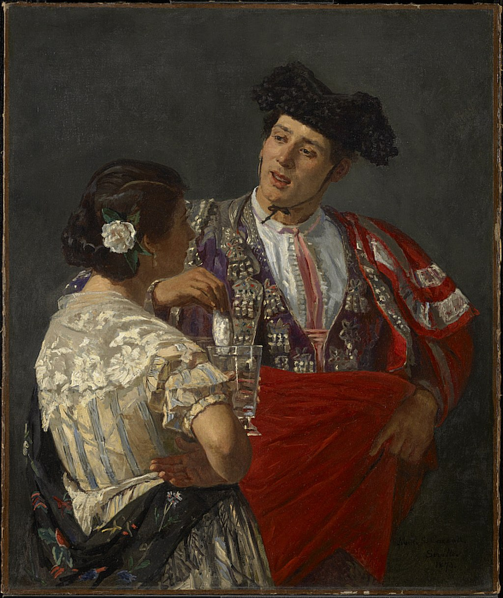

<head>
<meta charset="UTF-8" />
<meta name="keywords" content="drawing, painting" />
<meta name="description" content="drawings by Sunjy" />
<title>Sunjy</title>
<link rel="shortcut icon" type="image/x-icon" href="../../mImages/mCommon/favicon.ico" media="screen" />
<link rel="stylesheet" type="text/css" href="../../mCsses/mCommon/mCssA.css" />
<link rel="stylesheet" type="text/css" href="../../mCsses/mCommon/mCssB.css" />
<link rel="stylesheet" type="text/css" href="../../mCsses/mCommon/mCssC.css" />
<link rel="stylesheet" type="text/css" href="../../mCsses/mCommon/mCssD.css" />
<link rel="stylesheet" type="text/css" href="../../mCsses/mContent/mCssA.css" />
<link rel="stylesheet" type="text/css" href="../../mCsses/mContent/mCssB.css" />
<link rel="stylesheet" type="text/css" href="../../mCsses/mContent/mCssC.css" />
<link rel="stylesheet" type="text/css" href="../../mCsses/mContent/mCssD.css" />
</head>
<script type="text/javascript" src="../../mScripts/mContent/mContentAA.js" /></script>
<script type="text/javascript" src="../../mScripts/mContent/mContentAB.js" /></script>
<script type="text/javascript" src="../../mScripts/mContent/mContentAC.js" /></script>
<script type="text/javascript" src="../../mScripts/mContent/mContentAD.js" /></script>
<script type="text/javascript"></script> 
<script type="text/javascript">
document.write('<div class="mImgAbsolute"></div>');
/*
document.write('<p class="mFontSizeBColor" />From a white paper...</p>');
document.write('<table class="center"><tr><td>');
document.write('');
document.write('</td></tr></table>');
*/
</script>


<script type="text/javascript">
document.write('<p class="mFontSizeBColor" />Offering the Panel to the Bullfighter</p>');
document.write('<p class="mFontSizeSColor" />By Mary Cassatt， 1873. “Offering the Panel to the Bullfighter” depicts a young woman flirtatiously offering a glass of water to a bullfighter, who dips panal (honeycomb) into it to make an energizing drink.<br><br>Cassatt made several paintings of local Spanish subjects during her stay in Spain in 1873. The vibrant colors and brushwork were inspired by Diego Velázquez, whose artworks, Cassatt studied during her travels to Madrid and Seville.<br><br>The Bullfighter costume is depicted with the decorations and elaborateness of a torero’s outfit that the Spanish call the “suit of lights.” The flamboyant matador costume is part of the drama of a  bullfight, which is considered performance art.</p>');
document.write('<table class="center" /><tr><td>');
document.write('<br>Cassatt made several paintings of local Spanish subjects during her stay in Spain in 1873. The vibrant colors and brushwork were inspired by Diego Velázquez, whose artworks, Cassatt studied during her travels to Madrid and Seville.<br><br>The Bullfighter costume is depicted with the decorations and elaborateness of a torero’s outfit that the Spanish call the “suit of lights.” The flamboyant matador costume is part of the drama of a  bullfight, which is considered performance art." />');
document.write('</td></tr></table>');
</script>


